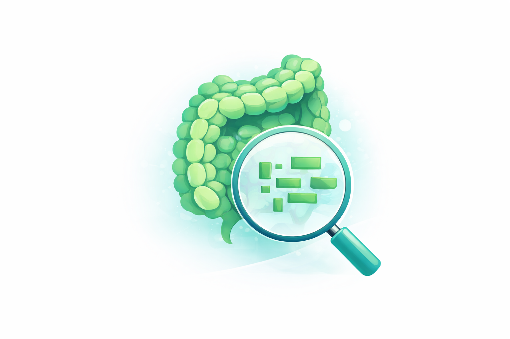
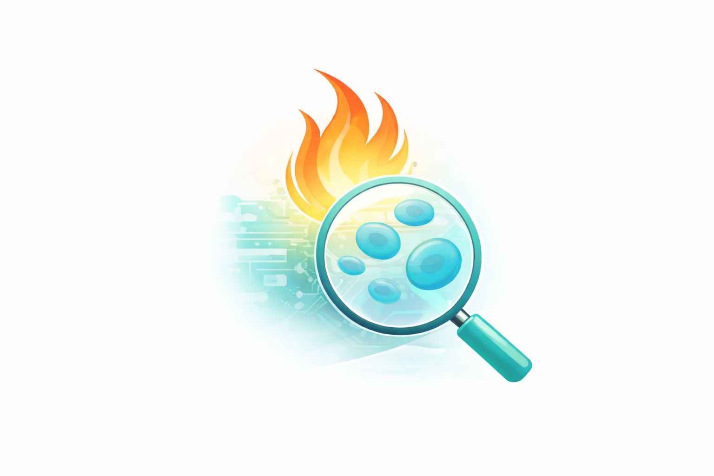

Burak Multiomics Analyzes

Gut
Fragmented biomarker data weeks early
 Blood
Delayed disease detection risk multiplier
Blood
Delayed disease detection risk multiplier

Inflammation
High inflammatory amplifier 3-of-5 signal confidence
We connect what your gut is already saying, the story in your blood, and the signal of inflammation; so you see the full picture before it becomes a crisis.